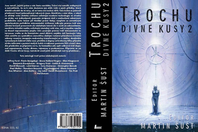

Benjamin
Rosenbaum: Ten, jenž přijímá vše nové
Czech translation by Robert Hýsek
***
Benjamin Rosenbaum se českým
čtenářům poprvé představil povídkou „Pusťte hodiny“
v úvodním čísle obnovené české edice magazínu F&SF. Když
jsem tu povídku pro magazín vybíral, byl jsem si jist, že jsem narazil na
slibného spisovatele a už tehdy jsem si přál, aby byl přítomen
v mé druhé antologii. Po krátkém jednání se vstřícným autorem jsem
zvolil neméně originální povídku „Ten, jenž přijímá vše nové“.
Narozdíl od té předchozí se odehrává v mimozemském prostředí, ale
obě mají společný silný sociální podtext a hrdiny, kteří se
bouří proti zavedenému pořádku a touží po změně. Pokud
půjde vše dobře, objeví se již brzy v českém překladu
další Rosenbaumovy svěží a nápadité příběhy a já jsem rád, že i
díky tomu mohou v poslední době čeští čtenáři sledovat
rozvíjející se kariéru nadějných spisovatelů fantastiky. Sám jsem
zvědav na autorův románový debut, i když ani on sám si není jist, kdy
svůj románový debut dokončí. Pro science fiction žánr je Rosenbaum
skvělým přínosem a lze doufat, že je pouze na počátku
skvělé literární kariéry.
***
Slunce žhnulo a vůz se otřásal
a skřípal. Vrú se krčil u pánova baldachýnu, kožíšek měl celý
propocený. Jeho Ghennungové mu lezli po těle a hledali v kožichu stín.
Kdykoli se jeden z nich pustil a přerušil tak spojení, Vrú pocítil náhlou
ztrátu vzpomínek. Jako by mu někdo utrhl končetinu.
Nebylo
to poprvé, co se musel zamyslet nad tím, jak je chudý. Měl pouze pět
Ghennungů. Tři s ním byli od narození, jeden byl prvonošeným
Ghennungem jeho otce a nejstarší patřil jeho otci a předtím i jeho
dědovi. Jednou se stalo, že oba starší Ghennungové zároveň vytáhli
své tesáky z jeho těla, aby se přesunuli na jiné místo na břiše,
a v tu ránu přišel o šedesát let vzpomínek na opracovávání kamene, na
milování s babičkou a maminkou, na trable učňovských let a na
obavy ze soubojů. Byl to zvláštní pocit, pamatovat si jen dvacet let
života svého těla. Zatočila se mu z toho hlava.
„Ohavný
den,“ prohlásil Chankriterkví, prastarý bohosochař, který ležel na voze
rozvalený na hromádce kožešin pod baldachýnem. Máchl klepetem. „Ohavné slunce.
Chlapče, v karmínové lahvičce je chladivý olejíček. Namaž
mě trošku, a opovaž se ho vybryndat!“
Vrú
našel olejíček a natřel jím pánovo staré tělo. Chankriterkví byl
celý napuchlý a na mnoha místech olysalý. Páchl jako mrtvola rozkládající se na
slunci. Vrúovy packy se zachvěly hnusem, kdykoli se pánova těla
dotkly. Pán umíral, a po jeho smrti Vrú přijde o veškeré jistoty.
Kolem
krku měl Chankriterkví, stejně jako Vrú, pověšenou na koženém
řemínku Krásou se kochající: baculatou, sametově hladkou,
smějící se bohyni z tvrdého šedého kamene, na níž tancovalo sedmadvacet
mrňavých Ghennungů. Obě sošky vytesal Chankriterkví. Zvláštní –
bohyně krásy, a nechá se stvořit takovým odporným, odulým tvorem!
Chankriterkví
náhle otevřel krví podlitá očka. „Nejsi bohosochař,“ zaskřehotal.
Vrú
radši ani necekl. Čímpak se provinil? Pán byl ješitný – že by mu neušlo,
jak si ho Vrú oškliví? Co když ho teď pošle s hanbou zpátky domů k
otci pást pavepře? A Vrú zůstane navždy starým mládencem – a bude
doufat, že se najde neteř, která se nad ním slituje a přijme pár jeho
vzpomínek?
„Víš,
díky čemu jsme dobyli tahle území?“ zeptal se ho pán. Odhrnul závěs a
ukázal na rudá, sežehnutá skaliska všude kolem vozu.
„Bitvu
s Bezbožnými jsme vyhráli, protože jsou nám nakloněni bohové,“ zarecitoval
Vrú.
Chankriterkví
si odfrkl. „Nejde o to, že jsou nám nakloněni bohové, ale o to, že my jsme
nakloněni bohům.“
Tomu
Vrú nerozuměl, a tak se sehnul, aby pána namasíroval. Chankriterkví však
klepetem odstrčil jeho packy a se zafuněním vstal. Upřel na Vrúa
znechucený pohled.
Vrú
si uvědomil, že cvaká klepety, a přinutil se přestat. Pán si ho
prohlížel – ukládal do paměti Ghennungů, jež brzy předá ostatním
tovaryšům, každé Vrúovo zachvění.
Vrú
se zvedl ze země. „Pane, jednu věc nechápu.“
Chankriterkvímu
zajiskřilo v očích – buď v něm Vrú probudil zájem, nebo
podezření. „Ptej se.“
„Jak
mohou být Bezbožní bezbožní?“
Pán
se zamračil.
„Nechápu,
jak se může někdo, kdo nemá boha, nezbláznit, když dostane nové
Ghennungy?“ Vrú si dobře pamatoval den, kdy přijal Krásou se
kochající za svou osobní bohyni, jejíž uctívání mělo dát jeho životu
řád. Když lékaři ve Velké podzemní síni šetrně sundali Ghennungy
z otcova vychládajícího těla, přál si zůstat dítětem, aby
si nemusel volit boha. Ale kněz ho přísně poučil, že bez
boha je člověk pouze zmatenou směsicí vzpomínek. Každý z jeho
Ghennungů by byl věrný někomu jinému, měl by jiné touhy a
názory, a on sám by pak byl jejich konfliktem zmítán jako malá kocábka ve
stoleté bouři.
„Vida,
jak je můj učedník ctižádostivý,“ zašeptal Chankriterkví. „Jeho pán
je starý a slabý. Možná by měl učedník zaujmout jeho místo ve vrchní
válečné radě. Možná by měl být zasvěcen do tajemství naší
války s Bezbožnými...“
„Pane,
nechtěl jsem...“
„Bezbožní
si Ghennungy nevyměňují,“ oznámil Chankriterkví.
„Cože?“
„Možná
leda v hodně mladém věku,“ řekl Chankriterkví a rozhodil
packama. „Nebo si možná prostřednictvím jakýchsi zmrzačených
Ghennungů předávají jen určité dovednosti. Nevíme to jistě.
Každopádně když někdo z nich zemře...“ Odmlčel se a
sledoval, jak na to Vrú zareaguje. „Ostatní jeho Ghennungy zničí. Proto je
v bitvách porážíme. Jejich nejlepší válečníci nejsou o nic starší než
jejich těla.“
Vrú
pocítil nával nevolnosti, do úst mu vhrkly hořké, páchnoucí šťávy z
žaludku. Bezbožní se po smrti svých těl úmyslně vraždí!
„Má-li
ctižádostivý učedník čas naslouchat mým slovům, vysvětlím
mu, proč není bohosochařem,“ pravil Chankriterkví. Poklepal klepetem
na Krásou se kochající zavěšenou okolo Vrúova hrdla. „Dělat kopie
bohů, aby na ně lidé nezapomněli a nezešíleli, to nic není.
Nastal čas, abys vytesal nového boha, stejně jako jsem já kdysi
vytesal Odvážně spravedlivého a stejně jako můj děd vytesal
Krásou se kochající.“ Uvelebil se na kožešinách a zavřel oči. „Bude
to monumentální dílo na počest svátku Hrš. Použiješ na něj ten nový
zelený kámen.“
Vrú
tiše sledoval, jak pán usíná. Slyšel tlukot vlastního srdce.
Žádnému
ze svých tovaryšů dosud Chankriterkví nedovolil stvořit boha, dokonce
ani Turmkovi. Proč chce takový úkol svěřit učedníkovi? Aby
zahanbil a rozhněval tovaryše – a tak potrestal nedočkavost, s jakou
dychtí po jeho smrti? Nebo že by snad byl natolik přesvědčen o
Vrúově talentu?
***
V nově vyhloubených šachtách
pracovali Nemajetní, dobývali z masívu zelený kámen. Kvůli horku měli
oholené kožichy. Mnozí z nich měli z kutání kamene zakrvácená klepeta. Vrú
se jim snažil vyhýbat pohledem. Tolik Nemajetných pohromadě bylo k
vidění málokdy. Měli silná, svalnatá těla... bez Ghennungů.
Byl na ně příšerný pohled, ale zároveň ho jejich obnažené
kůže čímsi přitahovaly, asi jako pláň čerstvě
napadaného sněhu.
V
šedé skále se třpytil zelený kámen. Chankriterkví celý den ječel na
předáka. Co tady dělají ti Nemajetní idioti? Jsou tak zabednění,
že se hodí leda na práci ve starých lomech, na těžbu starého šedého
kamene. Tenhle nádherný zelený kámen, do kterého bude možno vytesat tolik
detailů – dokonalý kámen pro bohy, který vyhráli s Bezbožnými –, se ze
skal dobýval obtížně, a Nemajetní nebyli schopní naučit se, jak na
to. Každý větší kus se jim podařilo rozbít.
„Jsou
k ničemu! K ničemu!“ vřeštěl Chankriterkví. „Proč
neseženeš nějaké opravdové lidi?“
„Tohle
je těžba kamení,“ namítal tvrdošíjně předák. „Opravdoví lidé by
takovou práci nevzali, svatý otče.“
„Vrú!
Ty budižkničemu! Nestůj tady jako Nemajetný!“ Pánovi se zlostně
zablesklo v očích. „Přiveď mi tamtoho,“ ukázal na obrovité
tělo Nemajetného, který opodál tupě otesával kamenný blok a každým
úderem klepete rozštípl drahocennou pecku zeleného kamene vejpůl.
Vrú
odvedl tvora za pánem. Byl zcela krotký – stačilo se jemně dotknout
klepetem jeho podivně holé kůže. Za chůze mírně funěl.
Klepeta měl rozbitá a vypadal hladově. Vrú toužil obejmout jeho silné
tělo svýma packama a zašeptat mu do ucha něco konejšivého... Snažil
se tyto šílené, hloupé myšlenky ignorovat.
„Přistrč
ho blíž,“ zakrákal Chankriterkví.
Vrú
ho přinutil pokleknout vedle pána. Že by se mu pán chystal něco
pošeptat? Co má asi v plánu?
Zatímco
předák zlostně přeskakoval z nohy na nohu, Chankriterkví
přitiskl svá stařičká klepeta k jemnému chmýří na krku
Nemajetného. Nemajetný smutně, bázlivě opětoval jeho pohled.
Chankriterkví zachrčel námahou, stiskl klepeta a proťal mu kůži
na šíji. Nemajetný sebou škubl, otřásl se a vydal pronikavý výkřik.
Předák se zaklením vyrazil vpřed. Ozvalo se cvaknutí a hlava
Nemajetného se odkutálela pryč. Jeho tělo se zhroutilo na zem a
zalilo Chankriterkvího krví.
Předák
se neovládl a vyjekl: „Zbláznil jste se?“ Vzápětí ho polila hrůza.
Klesl na zem a zaryl tvář do prachu. „Odpusťte, Svatosti...“ kvílel.
Pán
se uchechtl. Patrně ho potěšilo, že jeho stará klepeta stále
ještě dokážou zabít. Zase je sklapl. Krev Nemajetného byla černá.
Zakabonil se. „Sežeň nějaké opravdové lidi,“ poručil. „Tyhle
zrůdy nadělají víc škody než užitku.“
Vrú
se vyzvracel do prachu.
„Na
svou sochu potřebuješ neporušený kámen, hlupáku!“ okřikl ho pán. „A
teď mě očisti.“
***
Zelený kámen byl učiněný
zázrak. O měsíc později, za jasného dne, kdy se kotouče mlhy
plazily při zemi a stoupaly k obloze bez mráčku, stál Vrú v
sochařské jámě u Chankriterkvího ubikací před monolitem
přineseným z kamenolomu. Tesat do takového kamene bylo jako opojný sen:
kámen mu pod klepety a pod kladivem a pilníkem, které držel v pacce, jenom
kvetl.
Posledních
pár týdnů se vracel na ubytovnu jen kvůli večeři a spánku.
Tahle práce byla něco úplně jiného než pouhé vytváření kopií
bohů. Chankriterkví měl pravdu: až doteď nebyl
bohosochařem, jen pouhým imitátorem. Ale nyní pod jeho klepety vznikal
zbrusu nový bůh.
Když
se Vrú zahleděl na nového boha, připadal si, jako by na sobě
měl tisíc Ghennungů s pamětí tak starou, jako mají
věštečtí Ghennungové. On sám, jakožto devátý syn chudého stavitele
hradů, by se nikdy neodvážil vytesat něco tak šokujícího a
opravdového. Skrze něho tvořil bůh, a nebyla to Krásou se
kochající. Byl to nový bůh, kterého znal jen on sám a který
prostřednictvím jeho klepet vdechl život kusu zeleného kamene.
Rozhodl
se, že se bůh bude jmenovat Ten, jenž přijímá vše nové. Byla to
děsivě nádherná socha. Představovala postavu bez Ghennungů
– jako by to byl nějaký Nemajetný nebo zločinec poslaný do vyhnanství
–, která se skláněla ke Ghennungovi stojícímu na zemi, aby ho
něžně pohladila svým klepetem. Vrú věděl, že v příštím
okamžiku ona bytost uchopí Ghennunga a přivine si ho k hrudi, a Ghennung
do ní zaboří své tesáky, najde žíly a nervy a do vědomí bytosti se
bleskově vtiskne opojná směs vzpomínek, jež vytvoří její první
myšlenky a její novou identitu.
Vrú
se podíval na své packy. Třásly se. Nepřipadal si unaveně – bylo
mu spíš do zpěvu. Ale naposledy odpočíval před
devětadvaceti hodinami. Nemohl si dovolit udělat chybu.
Zahalil
boha kusem sukna a vydal se po cestičce k ubytovně. Jakmile opustil
sochařskou jámu, vliv boha pohasl a do všech končetin se mu rozlila
únava. Sotva udržel klepeta nahoře.
Když
procházel prázdným pavilónem s termálními vřídly, pohnul se před ním
stín. Strnul. Ze tmy se ozývalo chraptivé oddechování.
„Kdo
je tam?“ zeptal se.
Na
světlo vystoupil tovaryš Turmka.
Vrúovi
se ulevilo. „Tys mě teda vylekal, Turmko!“ vydechl. Hned jak promluvil,
všiml si, že Turmka nemá kolem krku Krásou se kochající, nýbrž Odvážně
spravedlivého, boha válečníků. „Co tady...?“
Tovaryš
k němu vrávoravě přistoupil. V očích měl zvláštní,
prázdný výraz. Že by byl opilý? „Jak se daří, Vrú?“ zeptal se. „Jak
pokračuje práce?“ Cvakl klepety a vzápětí sebou trhl, jako by ho to
samotného překvapilo.
„Jsi
v pořádku, Turmko?“ zeptal se Vrú a o krok ustoupil.
„To
je od tebe milé, že se ptáš,“ odvětil Turmka a připotácel se
ještě blíž. Vrú couval do zahrady pavilónu. Turmka byl sice menší postavy
než on, ale byl dobře živený a za léta bohosochařství si
vypěstoval slušné svaly.
„Chtěl
jsem se tě na něco zeptat,“ začal Vrú. „Až náš pán, ehm,
zemře, byl bys ochoten přijmout mě do učení, Turmko? Rád
bych...“
Turmka
se hlučně, hrozivě rozesmál. Předklonil se, přitiskl
si klepeta k očím a chvíli se otřásal smíchy. Pak vzhlédl.
„Všichni
půjdou k tobě,“ řekl.
Vrú
zamrkal.
„Chankriterkví
to říkal Mistru pěvci. Náhodou jsem je zaslechl. Převezmeš
všechny jeho Ghennungy. Nechce, aby se jeho vzpomínky rozředily a
rozptýlily mezi tovaryše, respektive tvrdí, že to nechce Krásou se kochající.“
„Turmko,
to je šílenství. Nemám k tomu vlohy...“
Turmka
prudce rozevřel klepeta. Byla čerstvě nabroušená a
naleštěná. „Vlohy! Ty pitomče! Chankriterkví si tě nevybral
kvůli nějakým vlohám, ale kvůli tvým pěti nanicovatým
Ghennungům a slabošské, poddajné povaze. Chce žít dál, o nic víc mu nejde!
Tvoje vzpomínky mu nebudou na překážku!“
Turmkova
pravá noha sklouzla dozadu, packama si přikryl Ghennungy na prsou. Tenhle
postoj Vrú kdysi viděl u svého bratra Viruarga, když cvičil. Byl to
postoj válečníka.
„Turmko...“
Jakmile
Turmka zaútočil, Vrú uskočil, ale bohužel příliš pozdě –
špička klepeta mu prořízla kůži na boku. Vrú naposledy bojoval
jako malý chlapec, když na hliněném hřišti hráli thakku. Hluboko se
předklonil a vyrazil kupředu, přičemž dával pozor na
Turmkova klepeta a snažil se do něj narazit celým tělem. Ale Turmka
se vytočil do strany a oběma packama prudce zasáhl Vrúovy ušní
vějíře. Vrúovi se podlomily nohy a v poryvu bolesti se skácel k zemi.
Turmka
nebojoval jako amatér: určitě si půjčil nebo pronajal
Ghennungy od nějakého válečníka. Nebyl opilý. Jeho skelný pohled byl
způsoben tím, že se ještě nesladil s novými Ghennungy, že byl zmítán
vnitřním konfliktem. Nicméně měl jasno v tom, že chce Vrúa
zabít.
„Vstaň,
Vrú,“ vyštěkl Turmka hlasem válečníka, hlasem následovníka
Odvážně spravedlivého, jenž chce protivníka zabít se ctí. A pak dodal
mírnějším hlasem, hlasem tovaryše, který poučuje mladšího
učedníka: „Skoncuju s tebou rychle.“
Vrú
cítil, jak ho zaplavuje vyčerpání, jak jeho svaly úpí únavou. Bylo mu
jasné, že když bude křičet o pomoc, Turmka ho zabije dřív, než
ho někdo uslyší. Slyšel, jak se Turmka opatrně sune pískem k místu,
kde ležel. Bohyně, prosím, pomoz mi, modlil se.
Ale
nakonec mu nepomohla Krásou se kochající – patrně to byl onen nový
bůh, Ten, jenž přijímá vše nové, který chtěl být vytesán,
protože se stalo něco, co by Vrúa samotného nikdy nenapadlo a co by sám
nikdy nedokázal. Ten, jenž přijímá vše nové zvedl Vrúovo tělo ze
země, mrštil jím proti Turmkovi a Vrúovo klepeto vystřelilo k
Turmkově hrdlu a přeřízlo řemínek, na kterém měl
Turmka pověšeného Odvážně spravedlivého. Turmka, ocitnuvší se bez
boha, zaječel. Vrú vzal boha ze země a odhodil ho do tmy
lázeňského pavilónu. Turmkova klepeta se ještě ohnala po Vrúovi, ale
jeho tělo už se otočilo a odpotácelo se za svým bohem. Vrú pelášil ke
svému pánovi.
***
Vrú se vrátil po týdnu půstu v den
svátku Hrš. Byl zesláblý, ale připadal si očištěný a
připravený na to, co ho čekalo. Až bude Ten, jenž přijímá vše
nové odhalen, jeho rodina konečně získá čest.
Usedl
na pódium vedle Chankriterkvího. Před nimi stála socha, zakrytá kusem
sukna. Vrú se nemohl dočkat, až ji spatří, ale musel si počkat
na slavnostní odhalení. Najednou mu došlo, co vlastně lidé uvidí –
Nemajetného či zločince v roli boha, který sahá po zakázaném
Ghennungovi! Kdyby sochu nestvořil sám bůh skrze jeho klepeta, taky
by ho pohled na ni vyděsil. Zachvěl se – co když v tom nikdo neuvidí
zásah boží vůle? Co když zplodil kacířské dílo? Snažil se
soustředit na Krásou se kochající, aby s její pomocí našel svůj
střed, jako když hrnčíř tvaruje hlínu na hrnčířském
kruhu. Ale hlavou mu vířily podivné výjevy. Svalnatí, roztomilí Nemajetní
opracovávající zelený kámen... krvavá hlava, kutálející se pískem kamenolomu...
Bezbožní a jejich zvláštní, kruté zvyklosti... Představoval si, jak jim
Nemajetný, jehož sochu stvořil, kyne na pozdrav. Seděl strnule,
pohroužen do prapodivných myšlenek, dokud nepřišel čas odhalit sochu.
Předvolal
ho kněz. Vyskočil z místa a doškobrtal přes pódium k soše.
Diváci zvědavě natahovali krky. Několik z nich tlumeně
okřiklo svoje děti. Všichni ztichli. Když uchopil sukno a stáhl ho ze
sochy Toho, jenž přijímá vše nové, lidé vykřikli úžasem.
Jenomže
to nebyl Ten, jenž přijímá vše nové.
Šlo
o tutéž postavu, tentýž blok zeleného kamene, který s takovou láskou otesal.
Ale do těla sochy byly zřetelně vytesány boule Ghennungů.
Bylo jich sedmnáct, nové číslo pro nového boha. A natažené klepeto
nehladilo padlého Ghennunga – místo toho drtilo v plamenech miniaturního vojáka
Bezbožných.
V
kameni byl patrný smělý, plynulý rukopis Vrúova pána.
Lidé
aplaudovali. Vrú se otočil na Chankriterkvího.
Na
pánově čelisti hrál spokojený, shovívavý úsměšek. Přidal
jsem to, co jsi opomenul, četl mu Vrú v očích. Nebylo to špatné dílo,
ale jeho poselství bylo chybné. A tak jsem ho opravil.
Co
na tom záleží? jako by Vrú slyšel svého pána. Co na tom záleží? Pán ho
samolibě pozoroval. Prokázal jsi, že jsi mne hoden. Toto tělo brzy
zhyne a ty poneseš mé Ghennungy. Všechny mé vzpomínky, mou moc. Staneme se
jednou osobou. A pak budeme tesat kámen a Krásou se kochající povede naši ruku.
Odér
Chankriterkvího rozkládající se kůže byl slabě cítit až tam, kde stál
Vrú. Pán umírá, ale neumře. Dokonce se ani moc nezmění. Vrú
věděl, že jeho pět slaboučkých Ghennungů nebude mít
šanci proti pánovým šestnácti. Jeho vzpomínky budou jen nezřetelným
šepotem uprostřed mocného řevu. Některé Ghennungy mu možná
vezmou, protože dvacet jedna Ghennungů je na tak mladé tělo
příliš velká zátěž. Něco asi zůstane: patrně Vrúova
pracovitost, jeho láska k texturám v kameni. Ale když si vzpomněl na to,
jak Chankriterkví v kamenolomu uťal Nemajetnému hlavu, uslyšel šestnáct
hlasitých a spokojených hlasů oproti možná třem slabým a
vyděšeným.
Měl
by být rád. Jeho bohyní byla Krásou se kochající. Proč by se neměl
radovat z toho, že největší bohosochař kmene Zbožných bude pracovat
prostřednictvím jeho klepet, svalů a jeho tvořivosti? Co na tom
záleží, že se jeho vzpomínky rozplynou? Pamatoval si sám sebe jako
kňourající miminko v matčiných packách: byl jejich devátý, nechtěný
syn. Pamatoval si, jak ji hladil po čele, když držela miminko v
náručí a řekla: „Nezbude na něj žádné dědictví.“ „Něco
už se najde,“ řekl tenkrát. „Možná by se mohl stát knězem. Dám mu
jednoho ze svých Ghennungů.“ „Dej mu dva,“ řekla matka. Zamračil
se na to křičící, neduživé mimino a pomyslel si: Dva? Takovému
zakrslíkovi?
Vrú
přetrpěl potlesk diváků a odšoural se zpátky na své místo vedle
Chankriterkvího. Jeho puch byl nesnesitelný.
Z
tohohle zakrslíka nikdy voják nebude, pomyslel si tehdy jeho otec.
Raději
bych byl Bezbožným, napadlo ho. Raději na místě zemřu, a to se
vším všudy, než abych se stal Chankriterkvím.
***
„Nechť je vysloven Věštcův
rozsudek, ať jej všichni slyší,“ oznámil vyvolávač. „Byl spáchán
zločin zrady, kacířství a pokusu o zběhnutí k nepříteli.
Tělo se ničím neprovinilo, a bude tedy ušetřeno. Je však uznáno
nezpůsobilým nosit paměť. Budiž posláno do vyhnanství mezi
Divoké. Šlechetný je Věštec.“
Drželi
ho, ale Vrú se nebránil. Byl schlíplý a celý zpocený. Podíval se na svou
hruď. Bylo zvláštní nevidět tam Krásou se kochající. Připadal si
zase jako dítě.
Před
očima mu vytanul pohled na Toho, jenž přijímá vše nové poté, co ho
připravil o všechny Ghennungy. Že zabil boha? Kdepak – vždyť to byl
falešný bůh, nestvůra!
Lékař
z jeho těla vytrhl jednoho Ghennunga. Sledoval, jak ho pálí na žhavém
uhlí, jak se při tom Ghennung kroutí. Vydral ze sebe zvláštní, syčivý
výkřik. Útroby se mu strachem nafoukly jako balón. Odebrali mu dalšího
Ghennunga, tentokrát dědečkova. Jak vypadala jeho babička?
Pamatoval si už jenom to, jak vypadala, když byla stará. Bylo to smutné,
opravdu smutné. Určitě byla zamlada krásná. Copak to sám kolikrát
neříkal?
Vzali
mu dalšího. Potřeboval boha. Boha, který by mu umožnil najít střed.
Nedokázal však myslet na Krásou se kochající. Protože tu zradil. Myslel na
Toho, jenž přijímá vše nové, boha oloupeného o vše, toužícího po
naději. Ano, to je ono. Vzali mu dalšího Ghennunga. Vrú, pomyslel si.
Jmenuju se Vrú. Sáhli po posledním Ghennungovi. Ten, jenž přijímá vše
nové, postava ze zeleného kamene. Nesmíš zapomenout.
Uprostřed
nádvoří stálo zvíře. Vítr chladil, les voněl jarem.
Určitě tam bude něco k ulovení. Drželi ho. Páchli jako jeho
kmen, a tak na ně nezaútočil. Pustili ho.
Rozhlédl
se. Byl tam jeden hnusný, starý a smradlavý. Vypadal, že se buď zlobí nebo
je smutný. Ostatní hrozivě mávali klepety a křičeli.
Zasyčel na ně a ukázal klepeta. Ale byli v přesile. Dal se do
běhu.
Zamířil
do lesa. Les voněl jarem. Něco tam uloví.
Překlad Bob Hýsek
***
Doslov Benjamina Rosenbauma:
V roce 1990, během studií
v Itálii, jsem byl fascinován revolučními událostmi – bylo to poprvé
kdy jsem byl skutečným svědkem právě probíhající historie. Vaše
Sametová revoluce byla, uprostřed všeho toho zmatku, skutečně elegantní
a ušlechtilá. „The Economist“ a „Il Manifesto“ se shodli v tom, že opravdu
stojí za pozornost, navíc jsem chtěl vidět město Kafky a
Kunderovy „Knihy smíchu a zapomnění“. Spolužák z Brna mi našel
anglicky mluvící hostitelku.
A já se tedy vydal do Prahy.
Podle spolužákových pokynů jsem si
to z velkého šedého pražského nádraží namířil futuristickou a krásnou
podzemkou (mozaikové dlaždice, třpytící se bronz...) na
předměstí.
Ozvalo se nějaké upozornění
v češtině a všichni vystoupili, zvědavě na mě
pokukovali skrze okna vlaku. Poté jsem odjel, sám, do velkého depa,
v němž byli porůznu roztroušeny temné masivy ztichlých souprav.
Světla zhasla a všude se rozprostřela tma.
Průvodčí, překvapený a
trochu naštvaný, mě nakonec vyvedl ven. A tam, v prázdném, klenutém a
rozlehlém prostoru vlakového depa, jsem potkal Sametovou revoluci.
Socialisticky realistická socha hrdinného pracovníka podzemky, se vzdouvajícími
se svaly na rukou, dvakrát tak vysoká než normální člověk, stála
v pochmurné žulové póze uprostřed haly. Na hlavě měla
zábavnou párty čepičku a v ruce plechovku od coly.
Našel jsem svou hostitelku a strávil
týden v Praze: zamiloval jsem si drsné i radostné sochy a mlhou zahalené
šedivé mosty a loutkáře a skláře tohoto kamenného, nevyzpytatelného
shluku ulic; a potkal jsem ježky (pro Američany skoro kouzelná
stvoření, i když vám možná připadají stejně otravní jako
městské veverky) na trávníku zalitém Měsícem; tancoval jsem
v klubech, kde se MTV dočkalo svého krátkého historického okamžiku
v roli očividně čestného zvěstovatele hřejivé
svobody.
Má hostitelka měla ctižádostivou
studentskou touhu vybudovat obchodní impérium. Její skutečně
zaměstnání bylo čistit světla kina naproti v ulici, zabralo
jí to asi tak půl hodinky denně a vydělala si půlku
doktorského platu; vydělala trojnásobek pronájmem svého městského
bytu za tržní ceny, i když nájem byl pečlivě kontrolován. Zeptal jsem
se jí, zda zná nějaké disidenty. Odpověděla, že samozřejmě,
každý zná nějaké disidenty; být disidentem byla mírně trhlá životní
volba ještě na její střední škole, něco jako být punkerem na té
mé.
Každá společnost má své disidenty;
povídka „Ten, jenž přijímá vše nové“ je právě o jednom takovém.
Napsal jsem ji po dvouspánkovém deficitu první týden Clarion West workshopu
roku 2001, a to pod dohledem Octavie Butlerové, která byla ten týden naším
vyučujícím. Znal jsem ji jen z toho týdne, ale i tak ji teď moc
postrádám; byla jedním z našich nejlepších disidentů. Povídka
v sobě nese něco ze znepokojivé a rozčilující vzájemné
závislosti mezi druhy přesně tak, jak o tom často psala. Vznikla
díky přemítání o biologické symbióze a taky díky knize spisovatelských
rad, která hlásala, že byste neměli psát příběhy pouze
s mimozemšťany a bez lidských postav. Rád porušuji pravidla.
***
Benjamin (Micah) Rosenbaum (1969
- )
Američan, narozen 23. 8. 1969
v New Yorku, v roce 1991 dokončil studium počítačových
věd a náboženství na univerzitě v Providence. Dnes se živí jako
programátor, což je ostatně jeho stálé povolání, ať už to bylo
v Silicon Valley, pro onlinové herní servery, Národní vědeckou nadaci
nebo švýcarské banky (osm let žil ve švýcarském Bernu a Baselu a příští
rok se tam bude stěhovat znovu). Dnes je jeho největší zálibou
čtení a hraní si s dětmi, když může hraje také rugby a
pozemní hokej. Do žánru vstoupil povídkou The Ant King: A California Fairy
Tale (2001) v magazínu F&SF, kde vydal několik dalších
povídek, z nichž nejznámější jsou Droplet (2002) a Start
the Clock (2004, č. Pusťte hodiny-F&SF CZ 1/2006). Nevyhýbá
se ani spolupráci s literárními servery jako jsou Strange Horizons a Infinite
Matrix, dnes je autorem asi 25 kratších prací, z nichž lze uvést
především tituly Embracing-the-New (Asimov's SF 2004-nom.
Nebula, č. Ten, jenž přijímá vše nové-Trochu divné kusy 2/Laser-books
2006) a Biographical Notes to 'A Discourse on the Nature of Causality, with
Air-Planes', by Benjamin Rosenbaum (All-Star Zeppelin Adventure Stories,
eds. David Moles & Jay Lake 2004-nom. Hugo). Některé povídky shrnul do
malonákladového a nepříliš rozsáhlého souboru Other Cities (2003), avšak
na plnohodnotný soubor prozatím čeká. Právě pracuje na dvou románech,
ten první je středoškolským příběhem patrně bez prvků
fantastiky. Zajímavější je ten druhý s pracovním názvem Resilience
(dosud nepublikováno). Odehrává se v milion let vzdálené budoucnosti a
jeho vypravěčem je postava, která v mládí vyrůstala ve
společnosti ústřední dvojice post-humánních protagonistů dříve
jmenované povídky Droplet (ta by měla vyjít v české edici
magazínu F&SF v průběhu roku 2007). Benjamin Rosenbaum je
spolu s např. Christopherem Rowem a Davidem Molesem
představitelem nové generace nadějných tvůrců moderní
science fiction. Každý z nich teď musí tento statut potvrdit
rozsáhlejším dílem, je tedy třeba trpělivě čekat, zda se
zrodí nové hvězdy žánru vyžadující naší bedlivou pozornost.
The original English text is copyright © 2004 Benjamin Rosenbaum and is under a Creative Commons License.
Originally published as "Embracing-the-New" in
Asimov's Science Fiction, January 2004.
"Ten, jenž prijímá vše nové" -
Copyright © 2006 for the Czech translation by Robert Hýsek.
Copyright © 2006
for the Czech edition by Laser-books and Martin Sust, editor of the
anthology Trochu divné kusy 2.
